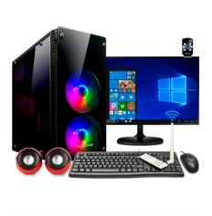
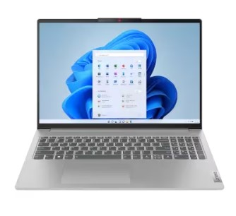
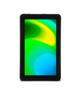
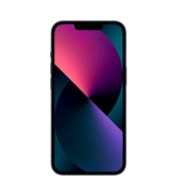

Una computadora es un dispositivo esencial para el desarrollo web,
permitiendo a los desarrolladores crear y probar sitios web y aplicaciones.
Utiliza lenguajes como HTML para estructurar contenido,
editar código y visualizar resultados en navegadores web.
son dispositivos de uso individual diseñados para tareas cotidianas como navegación web, ofimática, multimedia y juegos. Incluyen tanto computadoras de escritorio como portátiles.
Las laptops son computadoras portátiles que ofrecen un equilibrio entre rendimiento y movilidad, ideales para trabajar, estudiar y entretenimiento. Su diseño compacto incluye pantalla, teclado, y batería integrados.
Los dispositivos móviles son aparatos portátiles que combinan las funciones de una computadora con la capacidad de comunicación, como los smartphones y tablets. Permiten realizar diversas tareas como navegar por internet, ejecutar aplicaciones, y comunicarse a través de llamadas y mensajes que a su vez se clasifican en:
Las tablets son dispositivos móviles con pantalla táctil, diseñados para la portabilidad y facilidad de uso en tareas como navegación web, multimedia y aplicaciones ligeras.
Los smartphones son dispositivos móviles que combinan funciones de comunicación, navegación web, multimedia y aplicaciones, integrando un potente hardware y una pantalla táctil.
La computación en la nube es el suministro de servicios informáticos a través de internet, incluyendo almacenamiento, procesamiento y bases de datos. Permite a los usuarios acceder a recursos y aplicaciones desde cualquier lugar sin necesidad de gestionar infraestructura física. Esta tecnología ofrece flexibilidad, escalabilidad y reducción de costos.
La inteligencia artificial (IA) es la capacidad de una máquina para imitar funciones cognitivas humanas, como el aprendizaje y la resolución de problemas. Utiliza algoritmos y modelos para procesar datos, hacer predicciones y tomar decisiones. Su aplicación abarca desde asistentes virtuales hasta sistemas de análisis avanzado y automatización.
Algunos componentes clave que incluye la inteligencia artificial son: